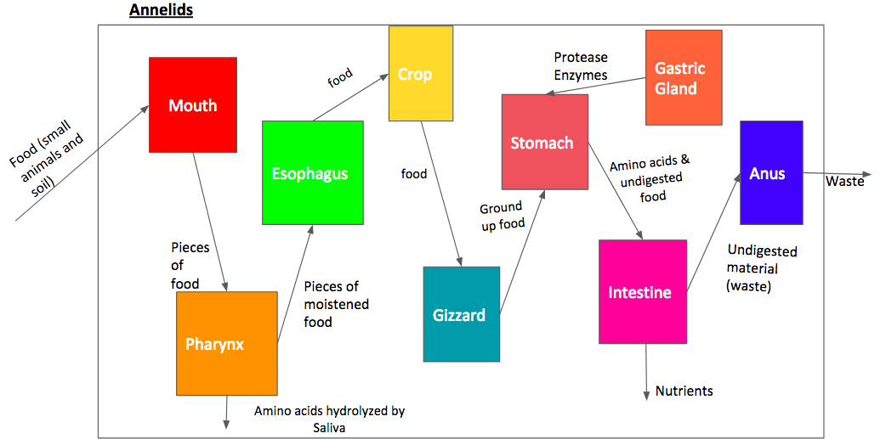
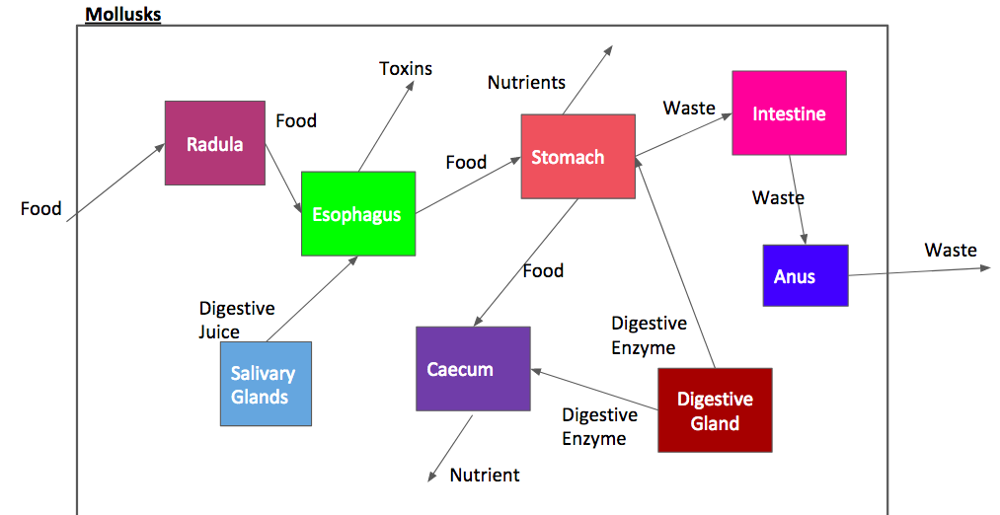
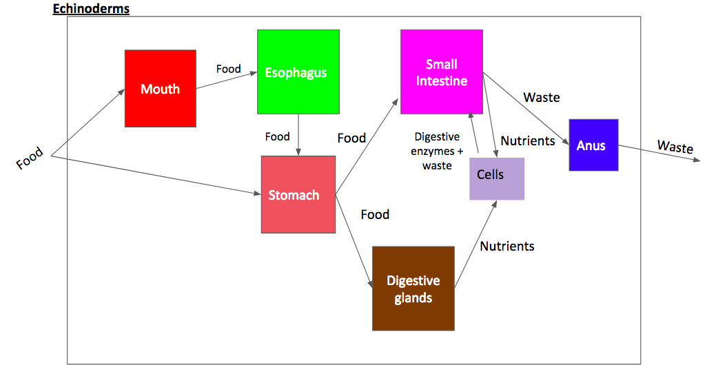

Poriferans

Fg.5
Brain Sponge
-
Sponges do not have a nervous, digestive or circulatory system. They rely on maintaining a constant water flow through their bodies to obtain food and oxygen and to remove wastes. Hence, poriferans are mainly detritivores that wait for food particles to enter on their own accord. Sponges have a unique feeding system amongst animals. Instead of a mouth they have tiny pores, or ostia, in their outer walls through which water is drawn in. Poriferans are filter feeders, meaning they sift out organic molecules for consumption and allow water and unfiltered material to pass through cavities and out the osculum. The flow of water through the sponge is in one direction only, driven by the beating of flagella which usher the water into ostium chambers where filtration and consumption occurs. Cells called choanocytes use phagocytosis to get small particles across cell membranes. There, lysosomes bind with the food vesicles and hydrolyze the molecules into smaller, usable units. Then, amoebocyte cells delivers the nutrients to other tissues not in contact with the water pathways (Reece). Since sponges do not have a specialized digestive tract, metabolic waste is expelled directly into the ostium chambers for excretion. Undigested food particles and waste exit the Poriferan by traveling with water out of the osculum guided by the movement of the flagella. The water then leaves the sponge body and returns to the open water with the waste. Sponge cells perform a wide range of bodily functions and appear to be more independent of each other than are the cells of other animals (“Porifera”).

Fg.4

Cnidarians
Fg.6
Vd.1
This phylum consumes a wide range of prey and are mainly predators that consume plankton, shrimp, small fish, and amphipods. Larger jellyfish can consume larger prey du to their long tentacles and larger body size. Cnidarians evolved to have adaptations that allow for active predation. Tentacles with nematocysts that can inject prey with toxins allow the cnidarian to grab its impaired prey. The cnidarians perform extracellular digestion in which the food is taken into the gastrovascular cavity where enzymes are secreted into the cavity and the cells lining the cavity absorb nutrients. Once the macromolecules have been digested, they are transported across the membrane of gastrodermal cells and into the body. The, cells complete digestion through the use of lysosomes inside cells, a process known as intracellular digestion. Both layers of cells can digest particles intracellularly because every cell layer in the cnidarian body is exposed to the aquatic environment and can thus ingest particles via phagocytosis (Pier). The gastrovascular cavity has only one opening that serves as both a mouth and an anus; this is known as an incomplete digestive system. Waste exits the cell in the same direction that it enters the cells; through the mouth. (“Boundless Biology”).
Fg.7
Platyhelminthes
Fg.9

Planaria
Fg.8
Many species of flatworms such as tapeworms are parasitic, living in the intestinal tracts of mammals and feeding on digested material. Aquatic species generally consume small organisms such as protozoans and bacteria, with some feeding on algae in certain life stages. Larger aquatic flatworms can consume mollusks by penetrating through its shell. There are three classes of Platyhelminthes: Turbellaria, Cestoda, and Trematoda. Both Cestoda and Trematoda rely on their host for nutrients thus, most do not possess a digestive system. Turbellaria, on the contrary, practices intracellular digestion and has an extensible pharynx. The Turbellarian flatworm, like the Planarian, has a two way digestive system, excreting out of its mouth (McDarby). The worm uses its mouth and pharynx, which are often located on the ventral side of the body and in the posterior region away from the brain, to suck food into its gastrovascular cavity, a feature with no organs that first evolved in nematodes. The gastrovascular cavity is heavily branched so that many cells are directly exposed to food particles. Secreted enzymes hydrolyze and break down the food into smaller components. Nutrients are then transported across cell walls and into the body tissues where they are subject to more digestion by lysosomes (Battista). The flatworms cannot continuously process food because they are unable to simultaneously feed, digest, and eliminate waste products. They must fully digest the food and excrete wastes before they can consume more food.
Nematoda
Many roundworms are parasitic, feeding on digested material in animals as well as occupying the roots of plants. Free-living nematodes are usually very small and consume detritus, phytoplankton, bacteria, and protozoans. Nematodes are the first phyla featured to contain a one-way digestive tract and have a complete digestive system separated into three parts: the stomodeum, the intestine, and the proctodeum. The stomodeum is the start of digestion, and includes the mouth. The type of mouth opening and accompanying buccal cavity is related to diet. A large mouth opening and prominent buccal cavity is found in those nematodes that feed by taking a bite of mucosa, and drawing it into the buccal cavity where it is digested. These nematodes are often called "plug feeders". In nematodes that feed by simple ingestion of host fluids the mouth opening and accompanying buccal cavity are generally quite small. Nematodes have mouths that have structures called cuticles, which can digest food mechanically. Nematodes also have stylets that can pierce cell walls and extract fluids from organisms in a parasitic manner. After food passes through the sphincters of the pharynx, it enters the lumen, or inside, of the intestine. Here digestive enzymes are secreted that hydrolyze the molecules in the food particles and allow absorption. Cells lining the intestine absorb nutrients by transport proteins and leave undigested waste behind (Boundless). There are no muscles in the intestine, so the movement of the worm is what pushes the material down the intestine. The last part of the digestive system is the proctodeum, which involves the excretion of any waste material at the other end of the worm (Johnstone).

Ancylostoma caninum
Dissected Roundworm
Vd.2
Annelida
Segmented worms have a varied diet that ecompasses canviorous, herbivorous, and detrivourous food. Worms such as earthworms consume detritus in the soil, such as dead leaves and twigs. Filter feeders such as giant tube worms consume floating particles in aquatic environments. Annelids such as leeches also consume organismal blood, a source of nutrients that requires special digestion. The body of an annelid, a segmented worm, is analogous to a tube with a smaller tube inside. The inner tube is the digestive tract, which is separated from the body wall by the coelom, the fluid in between. Annelids have a complete, one-way digestive system. Hydrostatic contractions allow the worm to push food through the pharynx and esophagus to the crop where it is stored. Food is moistened by the salivary glands, a gland that produces saliva that also begins chemical digestion. The food then moves to the muscular gizzard, where it is mashed into much smaller pieces. Food enters the stomach where gastric glands secrete enzymes for chemical digestion. Molecules then enters the intestinal tract to be absorbed into blood vessels, the first phylum featured to have a circulation system that can transport nutrients around the body. After being chemically digested in the intestine, the unused material is excreted through the anus. Annelids are unable to undergo digestion within cells (Reish). The excretory system consists of structural units called nephridia. Each nephridium contains a ciliated tunnel that leads to a long, coiled tubule, which leads to a bladderlike sac, a primitive bladder. Consumed fluid moves from the internal environment into the funnel. As fluid passes through the tubule, cells in the tubular lining absorb useful compounds such as glucose, amino acids, and salts. The remaining materials constitute metabolic waste, and they are passed into the bladderlike sac. The sac later opens through a pore in the earthworm’s skin, from which the waste products are discharged.

Dissected Earthworm
Vd.3

Fg.10
Arthropoda
Food digestion all starts in the mouth, which is a single pouch-like area where it serves as not only a mouth, but also an anus. After the food has entered the body, it travels through a tube called the alimentary canal running with the bodies' length. It also just happens that when the food is ingested it only travels in one direction unlike other phylums where it would travel through the body in multiple directions through all the different organs. Insects also have salivary glands where there is chemical digestion which aids in the absorbing and breaking down of the nutrients (Barnes). Crayfish, a crustacean, have pincher claws that they use to obtain food, tear it apart, and put it closer to their mouth. From the mouth, the food travels down the esophagus to the cardiac stomach, where it is ground up. The food then moves to the intestine, where nutrients are absorbed into the bloodstream. The waste is finally excreted through the anus. There are glands located internally behind each antennae that work to filter fluid waste from the blood (Green). The first part of the digestive system of a grasshopper, or an insect, is the stomodaeum, which is broken into four parts: First the pharynx and the oesophagus, where the food passes through first. Next is the crop, which is thin-walled and is responsible for storing food. Last is the gizzard, which is the muscular chamber that grinds and filters food. It has six, hard teeth called denticles. The digestion and absorption of food occurs in the next part of the digestive system, called the midgut. The final part of the digestive system of the grasshopper is the proctodaeum, the posterior portion between the midgut and anus. The first two parts of the proctodaeum are the ileum, the short interior portion, and the colon, the corrugated middle portion. The last portion is the rectum, which is enlarged and is responsible for reabsorbing water. Finally the waste is excreted through the anus (“Digestive System of Cockroach or Grasshopper”).


{kind=link}
{kind=link}
Mollusca
Organisms in the mollusca phylum possess a complete digestive system that varies amongst species. Clams, like sponges, are filter feeders. Food-containing water enters through the incurrent siphon and passes over the gills. The gills produce a sticky, glue-like material called mucus. Food becomes trapped in the mucus. The cilia are responsible for transporting the trapped food to flap-like structures called labial palps. The labial palps gather the food and place it into the clam's mouth. After water passes over the gills, it exits the clam through the excurrent siphon which is located next to the incurrent siphon. The siphon consists of a mouth where food is ingested, a short connecting tube called the esophagus, a stomach which temporarily holds food, and an intestine where food digestion and absorption takes place. A digestive gland surrounds the stomach and releases digestive enzymes into the food within the stomach. Digestion is extracellular: this means that digestive enzymes break food down into food particles and food molecules within the hollow intestine. Food molecules diffuse or are actively transported into the cells lining the intestine. Food is distributed to the cells of the body by blood. Digestive waste leaves the digestive system through the anus. This is located near the excurrent siphon, and the digestive waste is carried out of the clam by water moving outward (“BIO 5 GENERAL BIOLOGY”). The organs of the digestion in squid include the jaws, radula, salivary glands, esophagus, liver, stomach, intestine and anus. Squid typically eat twice a day. Food is grasped in the horny jaws and gripped by the radula, which is like a tongue with teeth. The radula transfers the food to the throat, from which it passes to the esophagus. The esophagus connects the mouth to the stomach. The esophagus receives digestive juices from salivary glands. Some glands may secrete a toxin as in select species of octopus. In squid, the juices of the digestive gland are not harmful to people. The esophagus empties into the stomach. The stomach is a small, shiny white sac that connects to the stomach pouch or caecum. Digestion begins in the stomach. The caecum also performs some digestion and is the primary site of absorption of nutrients in squid. Digestive enzymes are added by the liver, a large oval, brownish organ, and the pancreas. Enzymatic secretions may be added to the stomach or caecum in separate phases. The stomach and caecum are usually found behind the liver. The stomach pouch dumps its contents into the intestine, a narrow tube adjacent to the stomach pouch. The intestine empties into the rectum and finally, the terminal end of the digestive system, the anus. The anus empties into the funnel or siphon, which is the exit for all waste products ("Squid Lab").

Dissected Squid

Fg.12
Fg.11

Fg.13 Dissected Clam
Echinodermata
Echinoderms are aquatic organisms that are carnivores. Many species eat small aquatic invertebrates like shrimp, shellfish, and other echinoderms. Echinoderms are opportunistic and will eat a wide range of food. Generally, echinoderms have a simple digestive system comprised of a mouth, stomach, intestine, and anus. In many, the mouth is on the underside and the anus on the top surface of the animal. Echinoderms have a mouth that is connected to a cardiac stomach, an extension of the digestive system that can engulf food outside of the body when extended. Echinoderms such as Sea Stars have pseudopods that usher food into the body by movement. The mouth of a Sea Star is on the ventral side of the organism and is constantly on the seafloor, allowing for suctions actions that allow the organism to obtain food. Once the Echinoderm has food inside of its digestive tract, it reaches the pyloric stomach where it stored. After, the food enters the pyloric duct, a duct involved with the chemical digestion of molecules. Once the food is partially digested, it enters the pyloric glands where it is subject to more chemical digestion with enzymes.The pyloric glands are also tasked with the absorption of the molecules for the body of the echinoderm (“Echinoderms”). Undigested material leaves the pyloric glands and duct, traveling back into the pyloric duct. In sea stars, the anus is an extension on the dorsal side of the organism in the center. The anus is connected to the pyloric stomach and allows for the expulsion of waste (Pier).
Dissected Sea Cucumber
Vd.4

Dissected Sea Star
Chordata
In chordates, saliva secretion is a reflex act stimulated by the presence of food in the mouth. The amount of mucus present in saliva is regulated by the dryness or moistness of the food consumed; the drier the diet, the more mucus produced. After the food is moistened by the saliva, it moves from the mouth into the pharynx and the esophagus; they act as a passageway for food by connecting the mouth to the stomach. The stomach performs the function of storing food. Enzymes secreted by the gastric glands present in the walls of the stomach facilitate the breakdown of food. Stomach acid and other digestive fluid or enzymes facilitate the breakdown of food. Between the stomach and the small intestine lies an opening called pylorus. The movement of food from the stomach into the small intestine is regulated by pyloric sphincter valve. The absorption of nutrients takes place in the small intestine. Membranous tissue called mesentery prevent the movement of the small intestine in the abdominal cavity. The partially digested food moves into the small intestine, which is divided into duodenum and ileum. Duodenum almost runs parallel to the stomach, whereas the coiled section of the small intestine is referred to as the ileum. In the small intestine, bile and pancreatic juice aid in the process of digestion. Bile is a digestive fluid that is produced by the liver. The largest organ present in the body cavity, the liver comprises three lobes. Gallbladder is a small sac that is located under the liver. It acts as a reservoir for bile. Bile helps in the digestion of fat, whereas proteins and carbohydrates are broken down into simpler molecules by the enzymes produced and secreted by the pancreas. Bile and pancreatic juice flows through the common bile duct into the small intestine. After the absorption of nutrients, the undigested food moves into the large intestine. The large intestine also stores the undigested food. It performs the function of absorbing water from the food residue. The solid waste moves towards the cloaca. Water or liquid waste moves to the urinary bladder. Solid as well as liquid waste is expelled out of the body through the cloacal opening. Mucous cells found throughout the stomach lining and gastric pits secrete mucus to protect the stomach from its own digestive secretions. These specialized exocrine cells of the mucosa secrete mucus into the lumen of the stomach and into the gastric pits. This mucus spreads across the surface of the mucosa to coat the lining of the stomach with a thick, acid- and enzyme-resistant barrier. Stomach mucus is also rich in bicarbonate ions, which neutralize the pH of stomach acid. Golgi Apparatus is responsible for the packaging and transporting macromolecules, even the secretion of mucus in mucous cells. Within the Golgi body, various chemical groups are added to the macromolecules so ensure that they reach their proper destination. The protein component of mucous, called mucin, is modified in the Golgi body by the addition of carbohydrate groups. From the Golgi body, the modified mucin is packaged within a vesicle. The vesicle containing its mucous cargo fuses with the plasma membrane of the goblet cell, and is released into the extracellular environment (Haak).
Dissected Fetal Pig


Dissected Frog
Evolution
Fg.14
As animals evolved over time, the overall complexity of each successive phyla’s digestive system increased in complexity. Starting with the Porifera, which arose 2.5 billion years ago, they were the first animals that were capable of taking in nutrients from their surroundings, yet they lacked a digestive system. Phyla apart from porifera evolved a mouth and pharynx to allow for more control over consumption and consummation of bigger things other than cells; the pharynx helps filter what goes through the mouth. Next were the Cnidarians, who also had an incomplete digestive system. The Cnidarians and platyhelminthes evolved to have a gastrovascular cavity [1], which is important in absorbing nutrients from a central location in the animal and spreading it to the rest of the body. The gastrovascular cavity also releases digestive enzymes to break down food. However, this is a disadvantage because of the two-way system, as the animals cannot undergo different stages of digestion simultaneously. Cnidaria progressed to form tentacles with stinging cells that could be used to bring food, namely bigger and more mobile prey such as fish, into the mouth [2].The first animal phyla with a complete digestive system is Nematoda. Nematodes and the successive phyla differ in that they have a mouth and anus, making it easier to ingest and excrete material. Unlike planaria which have a one-way digestive tract, these animals have an evolved one-way tract that avoids the inefficiency of excreting out of the same hole that food is digested in. At this point, animals had developed an intestine [3] to replace the gastrovascular cavity. However, this advancement requires more energy. All of the phyla with intestines have complete digestive systems. Beginning with the Mollusks (and including all the following phyla) the stomach [4] evolved, making it easier to digest food in different stages, rather than all at once in a singular intestine or gastrovascular cavity. Moreover, having a stomach pre-digest the food before it gets to your cells makes it easier for your cells to break down that food and turn it into energy. Similarly, Annelids and Arthropods have a crop to store food and a gizzard to crush it into smaller pieces, again to condense the food digestion process into simpler steps and allowing the respective phyla to control the digestion of their food [5]. Arthropods differ from previous phyla in that they have appendages to grab food and bring it to their mouths. Mollusks evolved a cecum, which are pouches attached to the intestines that sort out indigestible particles. THis is different from the cecum that humans possess. The cecum in mammals is often place where bacteria aid in digestion of food. This is symbiotic relationship, as bacteria receive nutrients and a habitat [6]. Lastly are Chordates, with the most complex digestive system. Many chordates have additional organs [7] such as the small kidney and liver that assist in removing poisons from food. Vertebrates like amphibians and mammals also evolved the pancreas and gallbladder. Additionally, these vertebrates have separated small and large intestines, which aids in differentiating the processes of digestion and water absorption. By further separating each step of digestion such as the breakdown of fats and the release of nutrients into the bloodstream, the system becomes more productive.

Fg.15

Fun Facts about the Phyla!
-
Porifera
- Sea sponges have been in the world’s oceans for approximately 500 million years (Jose).
- Most porifera reproduce asexually, through what is known as budding. This was advantageous to the phyla millions of years ago, when conditions on earth fluctuated more frequently and it was inefficient for Porifera to find a mate in order to reproduce (“Sponges: Origins”). -
Cnidarian
- Instead of appendages like Chordates and Arthropods, Cnidaria such as the jellyfish use stinging tentacles to paralyze and capture their prey.
- Sea anemones also catch their prey with stinging tentacles, but when the tide goes out, they pull in their tentacles to survive out of water. This also aids in conserving water (Kindersley).Fg.15
-
Platyhelminthes
- The name of the flatworm is somewhat misleading, most of these animals do not have flat bodies, but rather round ones.
- The body shape of Platyhelminthes is unique in that it has bilateral symmetry, and each of its sides look identical (My Interesting Facts). -
Nematoda
- Nematodes have an extremely high internal pressure to keep them from collapsing in on themselves. This is related to the Nematodes’ coelom that we discussed earlier.
- Nematodes have a complete digestive system, but no circulatory system (Coish). -
Annelida
- Annelids can be found in a multitude of habitats around the world, they can typically thrive in any moist environment.
- The type of food Annelids eat and digest is largely dependent on their body structure, specifically their anterior end (Reish). -
Arthropoda
- Arthropods undergo a process known as metamorphosis, where their body form and physiology goes through a significant transformation from egg stage to larva, pupa, and adult state.
- Scientists hypothesize that the number of different Arthropod species is greater than the number of species in all other phyla combined. That’s a lot of speciation (AnimalSake)! -
Mollusca
- Scientists hypothesize that the Mollusk phylum likely began in the sea, which explains why the majority of Mollusks are found in the ocean. However, Mollusks like snails have evolved to survive in moist soil rather than in solely water.
- The giant squid can grow up to 55 feet long, much longer than the squid we dissected in class! Their eyes are the size of beach balls to allow them to see in dark waters (Declan). -
Echinodermata
- Sea cucumbers are edible, and considered to be delicious by many! Sea cucumber fishing is actually a lucrative business around the world (Schultz).
- The name of this phylum comes from the Greek word for “spiny skin” (“Echinoderms”). -
Chordata
- The fastest animal in the world, the peregrine falcon, and the largest animal in the world, the blue whale, are both Chordates. Evolution is amazing! - William Bateson coined the name chordata in 1885. However, the term was already used in 1880 (Fact File).